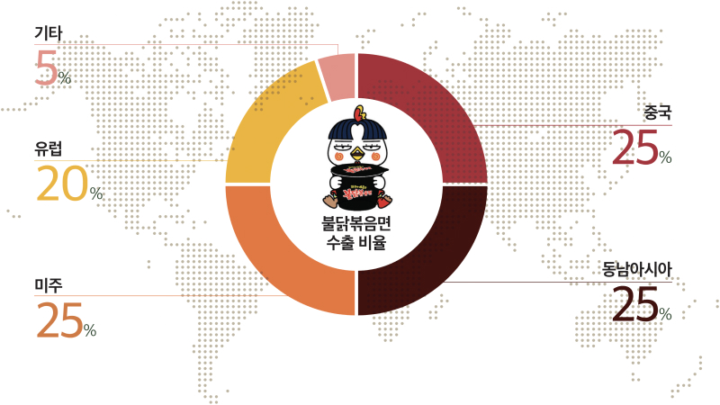

in Issue & Trend
세계가 열광하는 매운맛
불닭볶음면
2012년, 세상에 없던 매운맛이 등장했다. 불닭볶음면은 출시 초기에만 해도 ‘너무 매워서 도저히 사람이 먹을 수 없는 수준’이라는 평가를 받았지만, 특유의 중독성으로 각종 SNS에서 전파되며 뜨거운 관심을 받기 시작했다. 현재 불닭볶음면은 한 번쯤 도전해볼 만한 ‘스파이시’(Spicy)의 아이콘으로, 수많은 도전자를 매료시키며 국내외 라면 시장에서 영향력을 넓혀가고 있다.
글 김혜원
새로운 ‘빨간 맛’의 탄생
우리나라 최초의 라면은 1963년 9월 삼양라운드스퀘어(구 삼양식품그룹)이 생산한 ‘삼양라면’이다. 이후 클래식한 빨간 국물과 담백한 하얀 국물 라면을 비롯해 짜장, 비빔, 우동 등 다양한 스타일의 라면이 등장했다. 현재 국내에 시판 중인 라면은 500가지를 훌쩍 넘는데, 독보적인 매운맛으로 라면의 새로운 지평을 넓힌 ‘불닭볶음면’ 시리즈는 60년 한국 라면 역사상 다섯 손가락 안에 드는 메가히트 상품이다.
불닭볶음면이 최초 출시된 2012년부터 2024년 상반기까지 불닭 브랜드의 누적 매출액은 4조원이며, 누적 판매량은 70억개에 달한다. 수출 비중도 주목할 만하다. 현재 불닭 브랜드는 100여 개국에 수출되고 있는데, 2019년 연간 매출액의 50%를 달성한 이후 꾸준히 상승한 수치는 2024년 상반기에 77%로 고점을 찍었다. 대내적인 지표뿐만 아니라 대외적 성과도 훌륭하다. 탄생 10년 만에 한국 라면 수출액의 과반을 담당하며 세계적인 브랜드로 성장한 것이다. 이러한 ‘불닭 열풍’은 어떻게 시작됐을까. 불닭볶음면은 삼양식품가의 며느리인 김정수 부회장의 아이디어에서 출발했다. 우리나라에 매운맛이 유행하던 2011년, 우연히 명동에 방문한 김 부회장은 땀을 뻘뻘 흘리면서도 매운 음식을 즐기는 손님들의 모습에서 영감을 얻어 한국식 강렬한 매운맛을 라면에 적용해보기로 했다. 김 부회장은 직원들과 함께 전국의 불닭, 불곱창, 닭발 맛집을 섭렵하고 세계 각국의 고추를 샅샅이 분석했다. 닭 1,200마리와 양념 2톤이 투입될 정도로 치열한 1년여의 연구 끝에 2012년 4월 불닭볶음면이 탄생했다.
전 세계
100 여 개국
불닭 브랜드 누적 판매량
70 억개
불닭 브랜드 누적 매출액
4 조원
입소문으로 만들어진 불닭 열풍
불닭볶음면은 중독성 강한 매운맛으로 금세 마니아층을 양산했다. 자신만의 조합으로 제품을 즐기는 사례도 등장했다. 스트링 치즈, 참치마요, 계란 등의 부재료를 곁들여 매운맛을 완화하는 레시피가 SNS에서 공유되며 불닭볶음면을 찾는 이들은 더욱 늘어났다. 다양한 입맛과 니즈를 파악한 삼양은 까르보불닭볶음면, 치즈불닭볶음면, 불닭볶음탕면, 핵불닭볶음면 등의 제품을 잇달아 출시하며 불닭 열풍을 이어갔다. 특히 까르보불닭볶음면은 기존 불닭볶음면 액상 수프에 부드러움을 더하는 크림 분말 수프를 더한 제품으로, 폭발적인 반응 덕에 2018년 5월 정식 제품으로 출시되며 불닭 브랜드의 대표 제품이 됐다.
불닭 열풍이 특별한 이유는 불닭 시리즈가 별다른 광고 없이 입소문만으로 인기를 얻었기 때문이다. 국내 소비자의 자유로운 레시피 변형은 물론이고, 2014년부터 해외 소비자를 중심으로 ‘파이어 누들 챌린지’(Fire Noodle Challenge)가 유행한 영향이 컸다. 최근 미국에서 품절 대란이 일어난 까르보불닭볶음면이 뉴욕 타임스(The New York Times)에 소개되기도 했다. 미국 유명 래퍼 카디 비(Cardi B)와 음식 리뷰 틱톡커 키스 리(Keith Lee)가 까르보불닭볶음면을 구매하기 위해 30분이나 운전했다고 밝히며 까르보불닭 ‘먹방’ 영상을 틱톡에 업로드하는가 하면, 생일 선물로 까르보불닭볶음면을 받고 기쁨의 눈물을 터뜨린 소녀 아달린 소피아(Adalynn Sofiaa)의 영상은 조회수 1억회를 넘기며 화제를 모은 바 있다.
한국의 먹거리에서 세계적인 놀 거리로
한국 최초의 라면 회사인 삼양은 한국의 매운맛에 각국의 식문화를 결합한 불닭 시리즈로 세계적 명성을 더해가고 있다. 오리지널 불닭볶음면의 아이덴티티를 잃지 않으면서도 현지 맞춤형 제품을 개발해 색다른 매운맛을 선보인 전략이 주효한 것이다. 삼양은 수출 초기인 2014년 KMF 할랄 인증을 획득해 세계 무슬림 인구의 60% 이상이 거주하는 동남아 지역에 쉽게 수용될 수 있는 여건을 마련했다. 2017년에는 인도네시아 MUI 할랄 인증을 받아 할랄푸드 시장에 본격 진출했다. 국가마다 다른 입맛과 트렌드도 놓치지 않았다. 미주 지역에서 인기 있는 핫소스인 하바네로를 접목해 ‘하바네로라임불닭볶음면’을 출시했으며, 아시안 스타일의 ‘똠얌불닭볶음탕면’과 일본의 맛을 더한 ‘야키소바불닭볶음면’도 인기를 끌었다. 현재 국내외에 판매 중인 불닭 브랜드는 라면 21종, 스낵·간편식 6종, 소스 6종 등이다.
삼양은 K-Pop, K-드라마 등 한국 콘텐츠의 세계적 인기에 발맞춰 다양한 마케팅을 전개하며 불닭 브랜드의 콘텐츠 경쟁력 또한 강화하고 있다. 2024년 8월에는 유럽 덴마크의 불닭볶음면 리콜 철회를 기념하고자 코펜하겐에서 ‘불닭 스파이시 페리 파티’를 개최했다. 캡사이신 함량이 높다는 이유로 일부 불닭 제품에 대해 리콜 조치를 받았으나 검사 방식의 오류를 지적하며 제품의 안전성을 증명했고, 결국 리콜이 철회되며 화려한 복귀를 알린 것이다. 행사에 참여한 현지 소비자 100여 명은 불닭볶음면을 먹으며 축하 파티를 즐겼고, 로이터 등 주요 외신들은 이 모습을 적극 취재했다. 최근에는 미국 뉴욕과 LA, 중국 상하이, 영국 런던 등에서 현지 소비자들과 함께 불닭소스를 체험하는 글로벌 통합 마케팅 ‘스플래시 불닭’(Splash Buldak)을 진행했다. 삼양은 해당 마케팅의 일환으로 뉴욕 타임스퀘어에 4주간 대형 광고를 게재하며 타임스퀘어에 방문한 전 세계 관광객의 시선을 사로잡았다.
불닭볶음면은 수많은 프로슈머(Prosumer)1와의 시너지를 통해 단순한 음식에서 놀이의 아이템으로, 소비재에서 기호재로 변화하며 라면 시장에서 확고한 입지를 굳혔다. 앞으로도 삼양은 더욱 많은 소비자가 불닭 브랜드를 지속적으로 즐길 수 있도록 다양한 놀이 캠페인을 통해 콘텐츠 경쟁력을 강화해나갈 전망이다.
- 1. 생산자(Producer)와 소비자(Consumer)의 합성어로, 미국의 미래학자 앨빈 토플러(Alvin Toffler)가 저서 『제3의 물결』(The Third Wave)에서 제시했다. 생산과 소비의 역할이 융합되는 새로운 개념의 고객, 즉 생산 소비자 또는 참여형 소비자를 뜻한다.